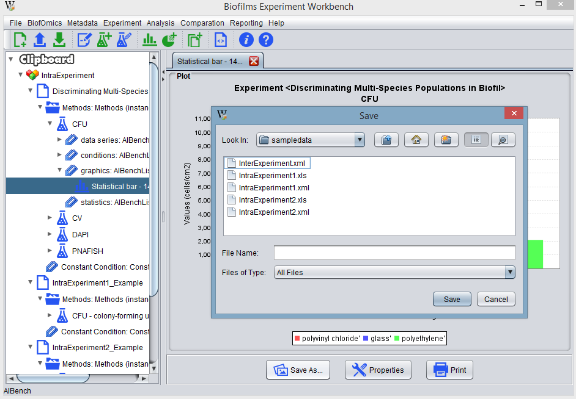

To save a plot to an image file, the user should select the plot in the clipboard and open the corresponding viewer. Then, press the Save As button and select the desired location in the hard drive.
